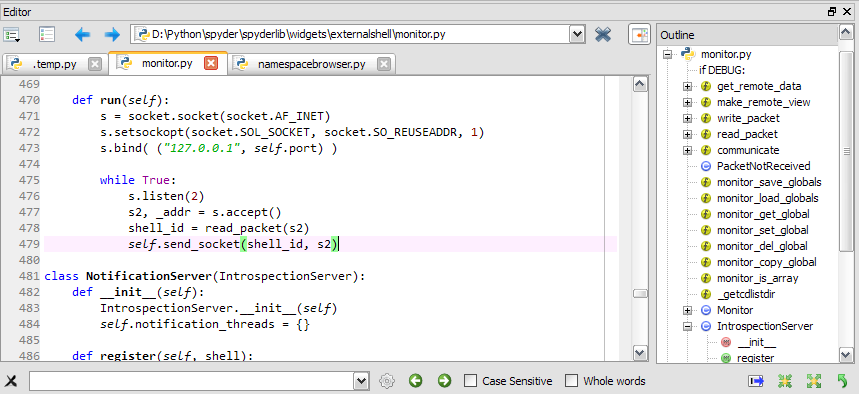
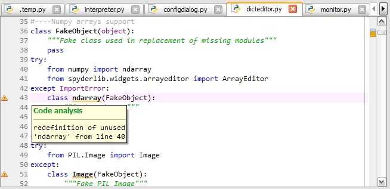

Editor¶
Spyder’s text editor is a multi-language editor with features such as syntax coloring, code analysis (real-time code analysis powered by pyflakes and advanced code analysis using pylint), introspection capabilities such as code completion, calltips and go-to-definition features (powered by rope), function/class browser, horizontal/vertical splitting features, etc.
Function/class/method browser:
Code analysis with pyflakes:
Horizontal/vertical splitting feature:

How to define a code cell¶
A “code cell” is a concept similar to MATLAB’s “cell” (except that there is no “cell mode” in Spyder), i.e. a block of lines to be executed at once in the current interpreter (Python or IPython). Every script may be divided in as many cells as needed.
Cells are separated by lines starting with:
- #%% (standard cell separator)
- # %% (standard cell separator, when file has been edited with Eclipse)
- # <codecell> (IPython notebook cell separator)
Related plugins: